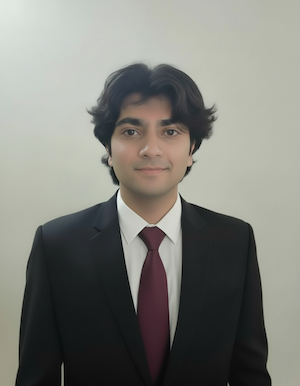

 Adhvaidh Sunny
18 y/o machine learning & software engineer
experience
Metrum AI — ML Engineer Intern
Sep 2024 – Feb 2025
The Possible Company — Software Engineer
Apr 2024 – Aug 2024
Concha Labs — ML Engineer Intern
Oct 2022 – Aug 2023
projects
GourmetGuideAI (2023) – swiftui mobile app to help create custom meal plan and recommend restaurants using ai, created at 16 y/o old.
volunteer
Kids Against Hunger Bay Area (501c3) — Creative Media Director & Staff Volunteer · Jun 2022 – present
CyberWisdom (501c3) — Founder & Presenter · Jun 2023 – present
skills
PythonJavaC++
JavaScriptTypeScriptSQL
PyTorchTensorFlowOpenCV
HuggingFaceLangChainReact
React NativeNode.jsDocker
GCPAzureLinux
CI/CDGraphQL